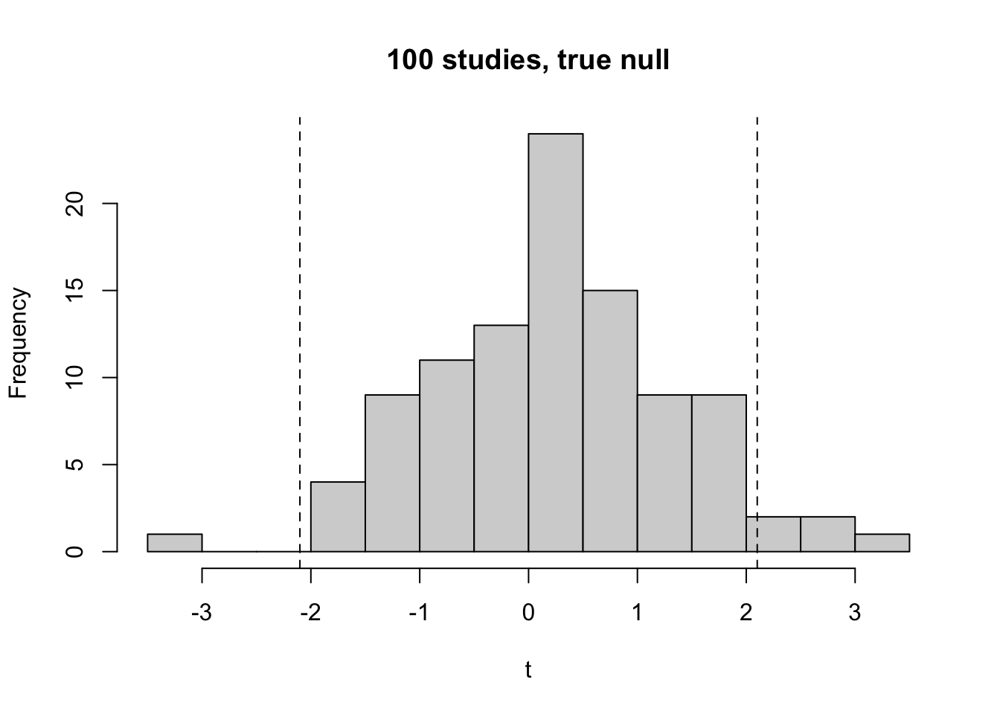
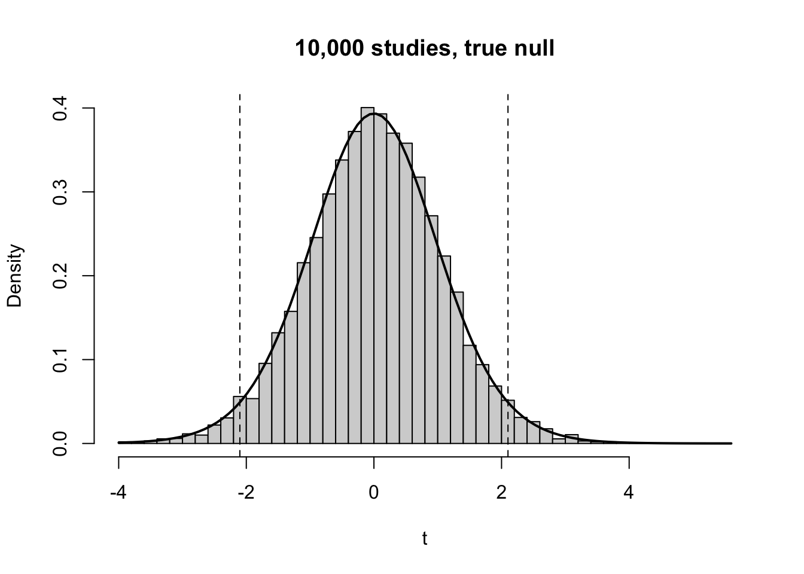
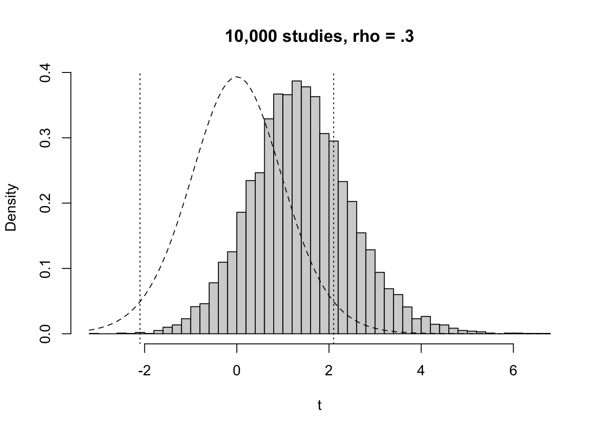
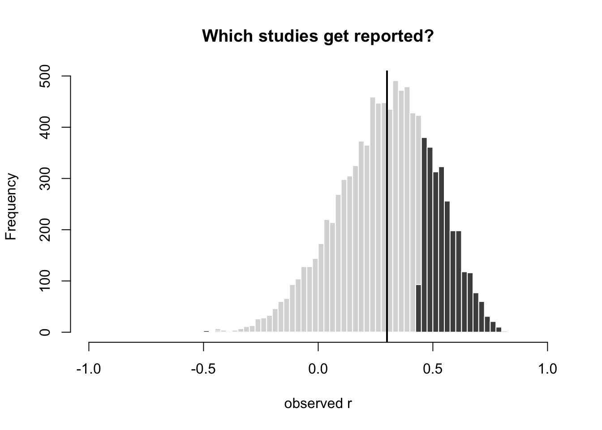
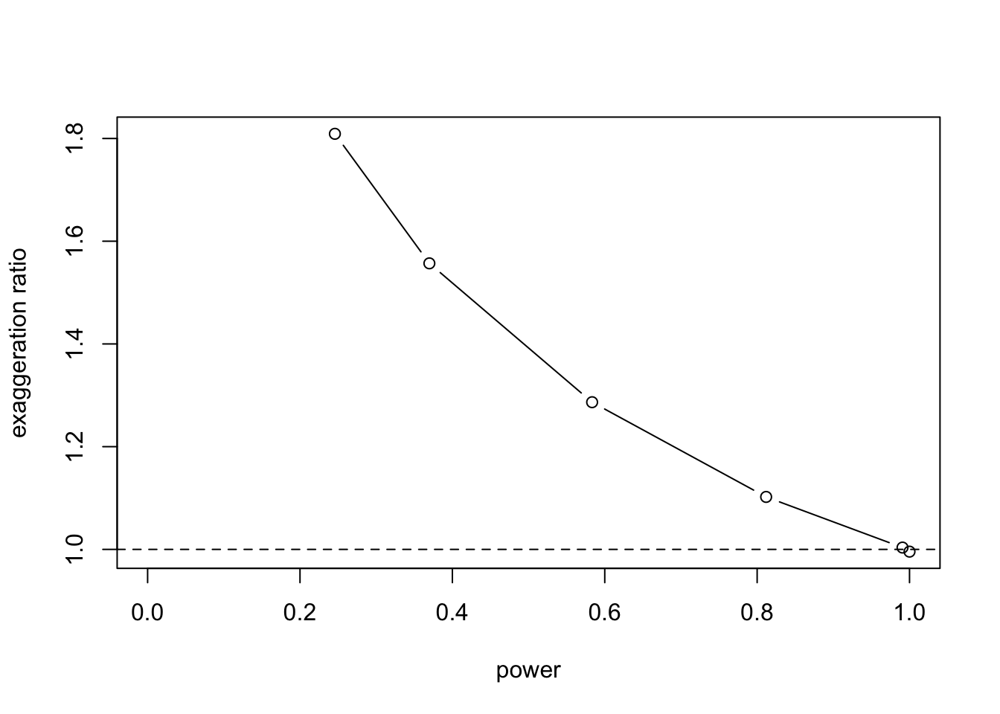
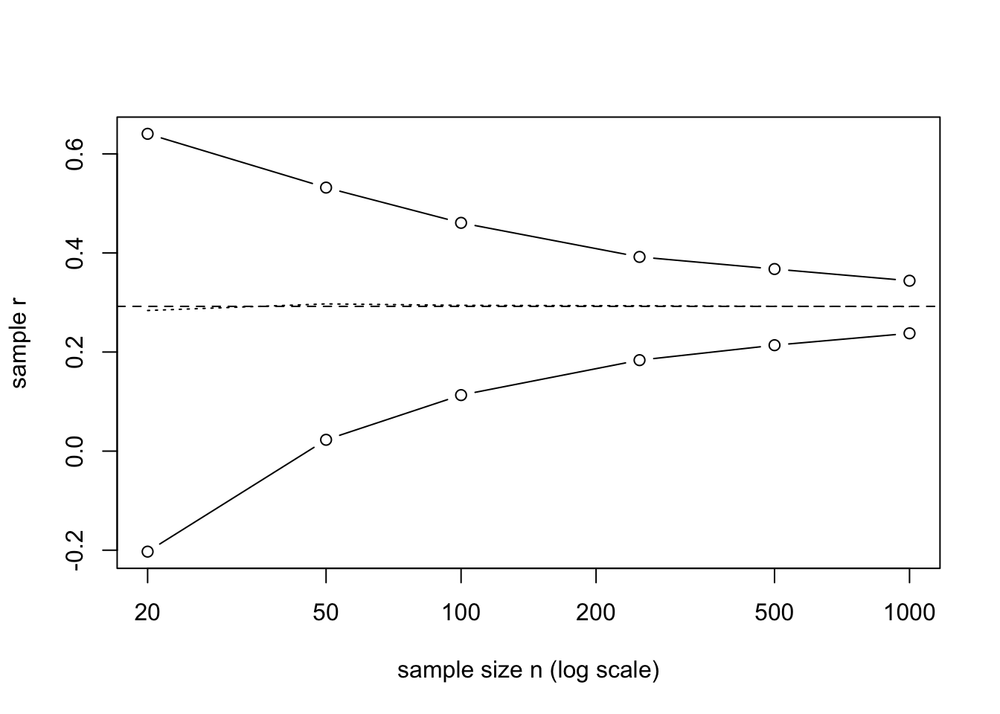
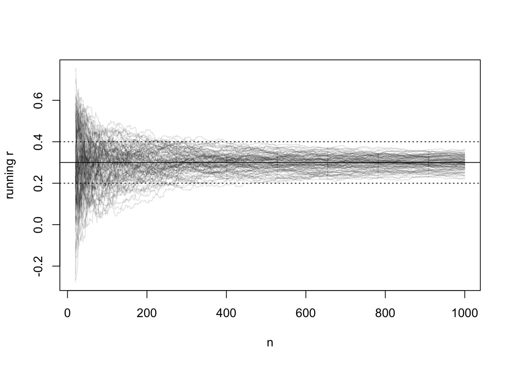

set.seed(1)
n <- 20
t_100 <- sim_studies(n, rho = 0, reps = 100)$t
hist(t_100, breaks = 20, main = "100 studies, true null", xlab = "t")
abline(v = qt(c(.025, .975), df = n - 2), lty = 2)
This chapter builds a way of talking about null hypothesis significance testing (NHST) in three stages. We imagine a single study, then imagine the same study repeated many times, and then ask what that repetition implies about the estimates that end up being reported.
The running example is the association between reading experience, measured by the Author Recognition Test (ART3; @vermeiren2023), and vocabulary.
Imagine I test you on vocabulary. You score 25. That number on its own tells us little.
Now imagine I test you and 19 other people. We have a sample of \(n = 20\) scores.
Suppose I also measure reading experience, for you and everyone else in the sample, using the ART3 [@vermeiren2023]. Each person now has two scores.
I calculate Pearson’s \(r\) between vocabulary and ART scores. To the extent that the tests are valid and reliable, \(r\) tells us about the association between reading experience and vocabulary in this sample.
We can ask whether the data are compatible with a population correlation of zero (\(\rho = 0\)). One way is to calculate
\[t = \frac{r\sqrt{n-2}}{\sqrt{1-r^2}}\]
with \(n - 2 = 18\) degrees of freedom.
Now imagine running these steps over and over, on new samples of 20 people, in a world where \(\rho = 0\) is true. Each study gives a different \(r\) and a different \(t\), purely through sampling variation. This only works as a thought experiment if we say what the imagined world is: a population in which the true correlation is zero (and, for the exact \(t\) distribution, in which the two variables are bivariate normal). The distribution is not built from real data. It is built from an assumption.
set.seed(1)
n <- 20
t_100 <- sim_studies(n, rho = 0, reps = 100)$t
hist(t_100, breaks = 20, main = "100 studies, true null", xlab = "t")
abline(v = qt(c(.025, .975), df = n - 2), lty = 2)
With 100 studies the histogram is ragged. With 10,000 it approaches the smooth \(t\) distribution with 18 degrees of freedom: roughly bell-shaped, with heavier tails than the normal.
set.seed(1)
t_null <- sim_studies(n, rho = 0, reps = 10000)$t
hist(t_null, breaks = 60, freq = FALSE, main = "10,000 studies, true null", xlab = "t")
curve(dt(x, n - 2), add = TRUE, lwd = 2)
abline(v = qt(c(.025, .975), df = n - 2), lty = 2)
Given this distribution, we can say how often \(|t|\) exceeds some value when the null is true. For \(n = 20\) the two-tailed 5% cutoff is
qt(.975, df = 18)[1] 2.100922so \(|t| \geq 2.10\) occurs in 5% of studies, with 2.5% in each tail. The familiar 1.96 is the large-sample limit of this cutoff, and the gap between 2.10 and 1.96 is the effect of small samples on the shape of the distribution. The cutoff for \(t\) corresponds to a cutoff for \(r\): at \(n = 20\), only \(|r| \gtrsim .44\) can be significant.
# critical r at n = 20
tc <- qt(.975, 18); tc / sqrt(tc^2 + 18)[1] 0.4437634If our observed \(|t|\) exceeds the cutoff, we reject the null. Following @greenland2016, we can say the data are incompatible with the null, along with all the other assumptions used to compute \(t\) (random sampling, normality, no selective reporting, and so on).
This decision-rule logic comes from @neyman1928 and @neyman1933. If we always reject when \(|t| \geq 2.10\), then in the long run we falsely reject a true null in 5% of tests. This is the Type I error rate, \(\alpha\). It is a property of the procedure, evaluated over the imagined repetitions. It is not the probability that any one significant result is false.
This framework differs from Fisher’s use of the \(p\)-value as a graded measure of evidence [@fisher1925]. Modern practice mixes the two, which @gigerenzer2004 describes as the “null ritual”, with the historical background in @gigerenzer1989 and a more recent review in @gigerenzer2018.
Now suppose the population correlation between ART3 and vocabulary is not zero. Say \(\rho = .3\). Nothing about our procedure changes. We test 20 people, calculate \(r\), and calculate \(t\) with 18 degrees of freedom.
Imagine running the study over and over, each time on a new sample of 20, in a world where \(\rho = .3\).
set.seed(2)
rho <- .3
alt <- sim_studies(n, rho, reps = 10000)
crit <- qt(.975, df = n - 2)
hist(alt$t, breaks = 60, freq = FALSE, main = "10,000 studies, rho = .3", xlab = "t")
curve(dt(x, n - 2), add = TRUE, lty = 2)
abline(v = c(-crit, crit), lty = 3)
The distribution of \(t\) has shifted to the right and is somewhat skewed, so it is no longer the symmetric curve from Part A. It still overlaps heavily with the null distribution. Many studies land between the cutoffs. (We call this distribution “shifted and skewed” rather than “noncentral \(t\)” for a reason that is explained below, after the power table.)
Using the same decision rule as before (reject if \(|t| \geq 2.10\)):
mean(alt$sig) # estimated power at rho = .3, n = 20[1] 0.2458In the Neyman–Pearson framework we fix \(\alpha\) in advance. Power then depends on three things: the true effect size, the sample size, and \(\alpha\).
| Null true | Null false | |
|---|---|---|
| Reject | Type I error (rate \(\alpha\)) | Correct (power, \(1-\beta\)) |
| Fail to reject | Correct (\(1-\alpha\)) | Type II error (rate \(\beta\)) |
Note that rejecting a false null is a correct decision. The error that low power produces is failing to reject a false null.
set.seed(5)
rhos <- c(.1, .3, .5)
tab <- data.frame(
rho = rhos,
power_n20 = sapply(rhos, function(p) mean(sim_studies(20, p, 5000)$sig)),
n_80 = sapply(rhos, function(p) ceiling(((qnorm(.975) + qnorm(.8)) / atanh(p))^2 + 3))
)
knitr::kable(tab, digits = 2,
col.names = c("True rho", "Power at n = 20", "n for ~80% power"))| True rho | Power at n = 20 | n for ~80% power |
|---|---|---|
| 0.1 | 0.07 | 783 |
| 0.3 | 0.26 | 85 |
| 0.5 | 0.64 | 30 |
Two different methods produced the numbers in this table, and it is worth being clear about what each one is. The point to take away is that realistic reading–vocabulary effects need samples far larger than 20. The next section explains where the numbers come from.
There are three routes to a power figure: simulation, a formula based on Fisher’s \(z\), and a formula based on the noncentral \(t\) distribution. They agree closely here, but they rest on different logic, and only the first is a direct implementation of “imagine the study repeated many times”.
This is the route we have been following. Generate many studies from a population with the stated \(\rho\), apply the decision rule to each, and count the proportion that reject. Its strength is that it needs no theory beyond the sampling model itself. Its limitation is that the answer carries Monte Carlo error. If true power is \(p\) and we run \(B\) simulated studies, the estimate has a standard error of about \(\sqrt{p(1-p)/B}\). With \(B = 5{,}000\) and \(p \approx .25\) that is about .006, so the third decimal place is noise. Different random seeds, or different versions of R, will give slightly different values. That is why the table reports two decimals, and why the results are computed when the chapter is rendered rather than typed in.
A correlation is bounded between \(-1\) and \(1\), so its sampling distribution is skewed whenever \(\rho \neq 0\). Fisher’s transformation \(z = \operatorname{arctanh}(r)\) removes most of that skew. After transforming, \(z\) is approximately normal, with mean \(\operatorname{arctanh}(\rho)\) and a standard deviation of \(1/\sqrt{n-3}\) that does not depend on \(\rho\).
That gives a simple recipe. Define the standardised true effect
\[\delta = \operatorname{arctanh}(\rho)\,\sqrt{n-3}.\]
The test rejects when the standardised statistic exceeds \(z_{1-\alpha/2}\) in absolute value, so power is approximately
\[1 - \beta \approx \Phi(\delta - z_{1-\alpha/2}) + \Phi(-\delta - z_{1-\alpha/2}).\]
The second term is almost zero for effects of this size, so we can drop it and solve for the sample size that gives a target power (80%, so \(z_{1-\beta} = 0.84\)):
\[n \approx \left(\frac{z_{1-\alpha/2} + z_{1-\beta}}{\operatorname{arctanh}(\rho)}\right)^2 + 3.\]
This is the formula behind the “\(n\) for ~80% power” column. It is quick and shows how \(n\) scales: halving the effect size roughly quadruples the sample size needed. It is still an approximation, because the normality of \(z\) is approximate and because it uses the normal cutoff (1.96) rather than the \(t\) cutoff (2.10). Its error is small for moderate \(n\) and larger for very small \(n\).
For an ordinary \(t\)-test comparing two means, the statistic follows a noncentral \(t\) distribution when the null is false. This is the distribution people usually have in mind when they say “power is the area of the noncentral \(t\) beyond the cutoff”. It is natural to expect the same to hold for the correlation test, but it holds only conditionally.
The statistic \(t = r\sqrt{n-2}/\sqrt{1-r^2}\) is the \(t\) statistic for the slope of a regression of vocabulary on ART3. If we treated the ART3 scores as fixed numbers (as in a designed experiment), then \(t\) would follow a noncentral \(t\) with \(n-2\) degrees of freedom and a noncentrality parameter proportional to the spread of those fixed scores.
In our study the ART3 scores are random: a new sample gives new ART3 scores with a new spread. The noncentrality parameter therefore changes from study to study. It is approximately
\[\text{ncp} = \frac{\rho}{\sqrt{1-\rho^2}}\sqrt{\chi^2_{n-1}},\]
where \(\chi^2_{n-1}\) is a chi-square random variable capturing how spread out the sampled ART3 scores happen to be. The distribution of \(t\) across studies is then a mixture of noncentral \(t\) distributions, with a different centre in each study. A mixture of this kind is not itself a noncentral \(t\).
This explains something about the structure of Parts A and B:
The code below checks all of this for \(\rho = .3\) and \(n = 20\). It compares four power estimates: direct simulation of studies, the mixture of noncentral \(t\) distributions, a single noncentral \(t\) at the typical noncentrality, and the Fisher \(z\) formula.
set.seed(8)
n <- 20; rho <- .3; B <- 20000
crit <- qt(.975, n - 2)
# 1. Direct simulation of studies
power_sim <- mean(sim_studies(n, rho, B)$sig)
# 2. Mixture: each study has its own noncentrality parameter
ncp_i <- rho / sqrt(1 - rho^2) * sqrt(rchisq(B, n - 1))
t_mix <- rt(B, df = n - 2, ncp = ncp_i)
power_mix <- mean(abs(t_mix) >= crit)
# 3. A single noncentral t at the typical noncentrality
ncp_1 <- rho / sqrt(1 - rho^2) * sqrt(n - 1)
power_nct <- pt(-crit, n - 2, ncp_1) + pt(crit, n - 2, ncp_1, lower.tail = FALSE)
# 4. Fisher z approximation
delta <- atanh(rho) * sqrt(n - 3)
power_fz <- pnorm(delta - qnorm(.975)) + pnorm(-delta - qnorm(.975))
knitr::kable(
data.frame(method = c("Simulate studies", "Mixture of noncentral t",
"Single noncentral t", "Fisher z formula"),
power = c(power_sim, power_mix, power_nct, power_fz)),
digits = 3, col.names = c("Method", "Power"))| Method | Power |
|---|---|
| Simulate studies | 0.252 |
| Mixture of noncentral t | 0.250 |
| Single noncentral t | 0.255 |
| Fisher z formula | 0.248 |
Expect the first two rows to agree to within Monte Carlo error, because they describe the same process: that is the evidence that the mixture explanation is right. The last two rows should be close to them but not identical, because each is a one-step approximation.
If power is low, a non-significant result is what we would expect to see most of the time, even when the effect is real. A non-significant \(t\) therefore does not show that \(\rho = 0\). Failing to reject is not accepting. A null result is hard to interpret unless we have a reason to think the test could have detected an effect of the size we care about.
Part B asked what happens when the effect is real but power is low. Part C asks what happens to the estimates we actually see.
Reuse the simulation from Part B (\(\rho = .3\), \(n = 20\)), keep \(r\) as well as \(t\), and imagine that only the significant studies reach print.
set.seed(3)
rho <- .3
res <- sim_studies(20, rho, reps = 10000)
mean(res$r) # all studies: close to .3[1] 0.2959991mean(res$r[res$sig]) # significant only: much larger[1] 0.545431mean(res$r[res$sig]) / rho # exaggeration ratio (Type M error)[1] 1.818103mean(res$r[res$sig] < 0) # share of significant results with the wrong sign (Type S error)[1] 0.003506038brk <- seq(-1, 1, by = .025)
hist(res$r, breaks = brk, col = "grey85", border = "white",
main = "Which studies get reported?", xlab = "observed r")
hist(res$r[res$sig], breaks = brk, col = "grey30", border = "white", add = TRUE)
abline(v = rho, lwd = 2)
Two points to make explicit:
Repeat the simulation across sample sizes and compare the exaggeration ratio with power.
set.seed(6)
ns <- c(20, 30, 50, 85, 200, 500)
infl <- do.call(rbind, lapply(ns, function(k) {
s <- sim_studies(k, .3, 5000)
data.frame(n = k, power = mean(s$sig), ratio = mean(s$r[s$sig]) / .3)
}))
infl n power ratio
1 20 0.2458 1.809115
2 30 0.3698 1.556912
3 50 0.5834 1.286576
4 85 0.8118 1.102146
5 200 0.9908 1.003560
6 500 1.0000 0.995628plot(infl$power, infl$ratio, type = "b", xlim = c(0, 1),
xlab = "power", ylab = "exaggeration ratio")
abline(h = 1, lty = 2)
The ratio falls toward 1 as power rises. Low power makes significant results unreliable as well as rare.
A second way to see the problem is to treat a large dataset as a stand-in population, draw repeated subsamples of different sizes, and look at the spread of the estimates at each \(n\). This is the approach used by @marek2022 for brain-wide association studies. Here we simulate the population, but real ART3 and vocabulary data from a large sample would serve equally well.
set.seed(7)
N_pop <- 10000; rho <- .3
px <- rnorm(N_pop); py <- rho * px + sqrt(1 - rho^2) * rnorm(N_pop)
pop_r <- cor(px, py)
ns <- c(20, 50, 100, 250, 500, 1000)
band <- t(sapply(ns, function(k) {
rr <- replicate(2000, { i <- sample(N_pop, k); cor(px[i], py[i]) })
quantile(rr, c(.025, .5, .975))
}))
plot(ns, band[, 3], type = "b", log = "x", ylim = range(band),
xlab = "sample size n (log scale)", ylab = "sample r")
lines(ns, band[, 1], type = "b")
lines(ns, band[, 2], lty = 3)
abline(h = pop_r, lty = 2)
What changes with \(n\) is the spread, not just the average. A study at \(n = 20\) is drawing from a very wide distribution.
The third view follows one study as data accumulate. @schonbrodt2013 simulated studies in which participants are added one at a time, tracked the running correlation, and defined a “corridor of stability” around the true value. For each trajectory we can ask: after what sample size does the estimate never leave the corridor again?
set.seed(4)
N <- 1000; rho <- .3; w <- .1
traj <- replicate(100, {
x <- rnorm(N); y <- rho * x + sqrt(1 - rho^2) * rnorm(N)
sapply(20:N, function(k) cor(x[1:k], y[1:k]))
})
matplot(20:N, traj, type = "l", lty = 1, col = "#00000020",
xlab = "n", ylab = "running r")
abline(h = c(rho - w, rho, rho + w), lty = c(3, 1, 3))
# sample size after which each trajectory stays inside the corridor
stable_n <- apply(traj, 2, function(r) {
out <- abs(r - rho) > w
if (any(out)) 20 + max(which(out)) else 20
})
quantile(stable_n, c(.5, .8, .95)) 50% 80% 95%
112.50 239.40 364.15 These quantiles are themselves simulation estimates, based on only 100 trajectories, so the upper quantile in particular will move noticeably if you change the seed or the number of trajectories. Increase the number of trajectories to see them settle. The corridor result is something we can only obtain by simulation: there is no simple closed-form formula for “the sample size after which a running correlation never leaves the corridor again”.
The funnel shape is the teaching tool: trajectories fan out at small \(n\) and narrow later. @schonbrodt2013 report that samples of roughly 250 are needed for correlations to stabilise within a corridor of \(\pm .1\) for typical effect sizes. Compare that with what the simulation above gives for \(\rho = .3\).
The two views complement each other. The previous section is cross-sectional (many independent studies at each \(n\)). The corridor is longitudinal (one study growing). Both tell the same story about precision.
The framework developed here shows what NHST does well: it gives a decision procedure with a controlled long-run Type I error rate. It also shows where the difficulties lie.
Low-\(n\) studies and huge-\(n\) studies fail in opposite ways: the former cannot detect real effects, the latter detect trivial ones. In both cases, the useful questions concern estimation: how large is the effect, and how precisely do we know it?